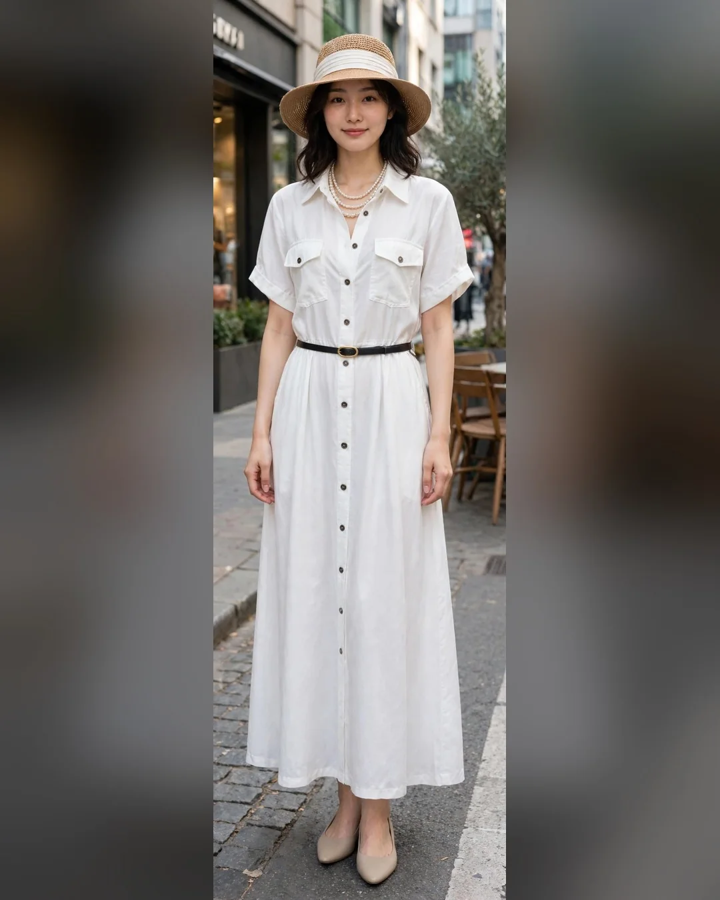
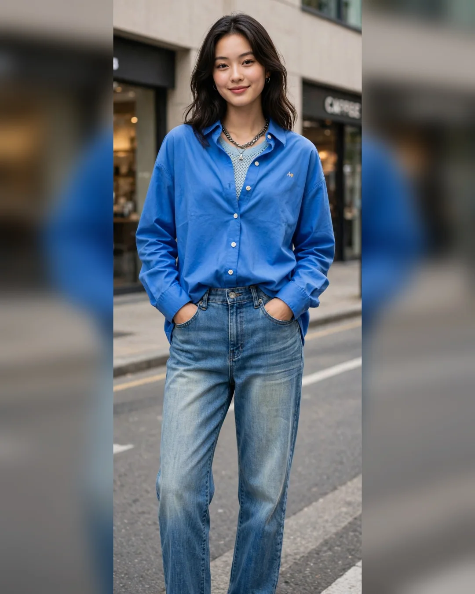

22
阿蓁の穿搭提案 21 / 27
亮藍襯衫＋牛仔寬褲
藍色穿對了，氣色直接加分。
亮藍襯衫配牛仔寬褲，顏色飽和但不難搭，是這批裡最搶眼的一套。
喜歡這一套？先複製資訊，再到 Instagram 貼上詢問。
私訊問價需要登入 Instagram 才能傳送訊息。
未開啟對話？開啟 @azhen_2026 個人檔案（另開分頁），再點「發送訊息」。
若仍無法開啟，請用右上角選單改用外部瀏覽器，或在 Instagram 搜尋 @azhen_2026。
資訊不會自動傳送，請貼上後再送出。
穿搭由 AI 模特兒展示，衣服為店內實際販售款式。